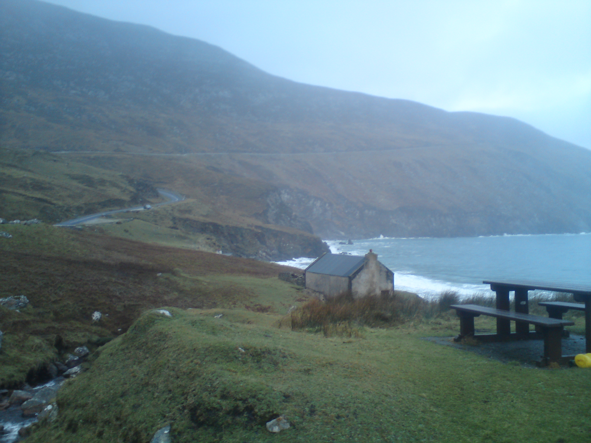

Moje ulubione miejsca do zobaczenia w Irlandii
Klify Moheru
Klify Moheru znajdują się w hrabstwie Clare, skąd pochodzę. Zobacz, jakie są fajne!

Wyspa Achill
To duża wyspa u wybrzeży hrabstwa Mayo. Ma dziki i piękny krajobraz gór, torfowisk i klifów.
